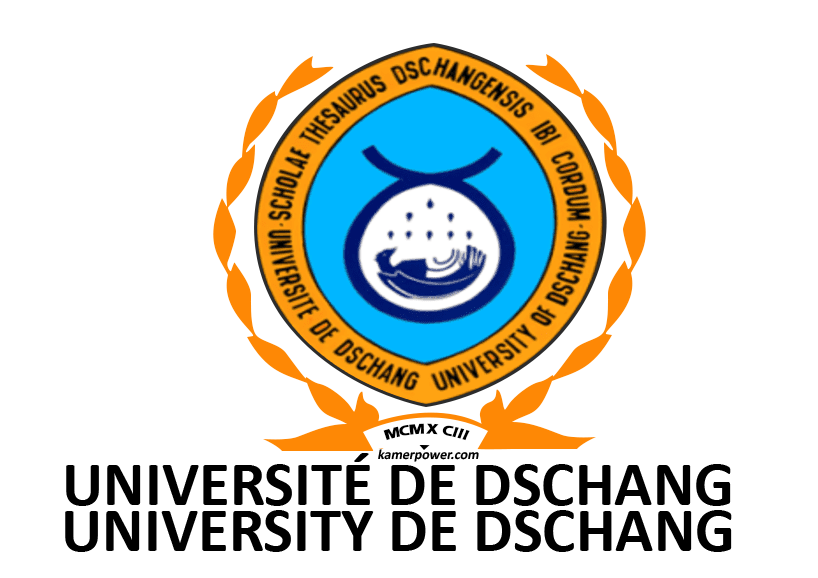

Parcours Académique
 ENSIM | 2025 - Présent
ENSIM | 2025 - Présent
Ingénieur ASTRE
Systèmes Embarqués
- Architecture ARM Cortex-M
- OS Temps Réel (FreeRTOS)
- Linux Embarqué & Yocto
- Driver Development
Autres modules
- Dévéloppement Web
- Conception d' IHM
- Communication réseau & Protocoles IP
- Gestion de projets

IUT Bandjoun | 2023 - 2025

IUT Bandjoun | 2023 - 2025DUT Génie Électrique & Info. Industrielle
Automatisme & Élec
- Automates (TIA Portal, Unity)
- Électronique de Puissance
- Machines Électriques
- Instrumentation & Capteurs
Informatique
- Langages C / C++
- Microcontrôleurs (AVR, PIC)
- Bases de données SQL
- Supervision (SCADA)
Univ. Yaoundé I | 2022 - 2023
L1 Physique - Sciences Fondamentales
Physique
- Mécanique du Point
- Électromagnétisme
- Optique Géométrique
- Thermodynamique
Mathématiques
- Analyse réelle
- Algèbre Linéaire
- Probabilités & Statistiques
- Calcul Numérique